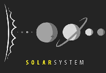

Bienvenido al Sistema Solar. Aquí puedes explorar los planetas y aprender más sobre ellos.
Es el planeta más cercano al Sol y el más pequeño del Sistema Solar.
Es conocido por su densa atmósfera y su superficie extremadamente caliente.
Es nuestro hogar y el único planeta conocido que alberga vida.
Es conocido como el planeta rojo, es un objetivo importante para la exploración espacial.
Es el planeta más grande del Sistema Solar y tiene una gran cantidad de lunas.
Es famoso por sus impresionantes anillos y su gran tamaño.
Es un planeta gigante de hielo que gira sobre su eje de manera diferente a los demás planetas.
Es el planeta más lejano del Sistema Solar y es conocido por su fuerte viento y su color azul.